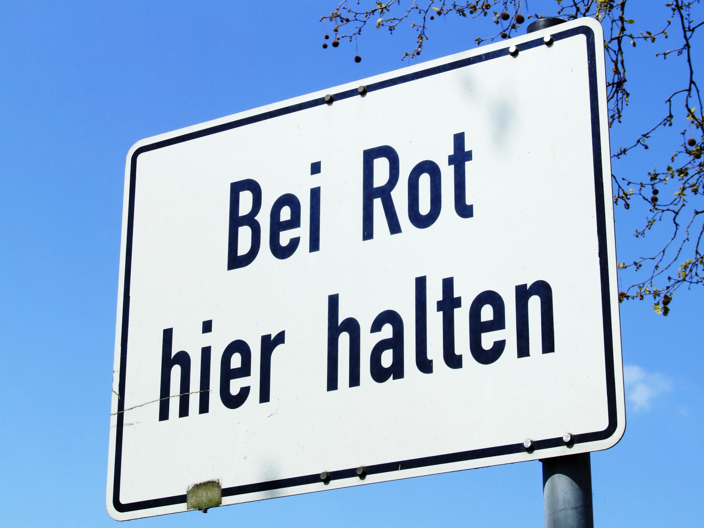
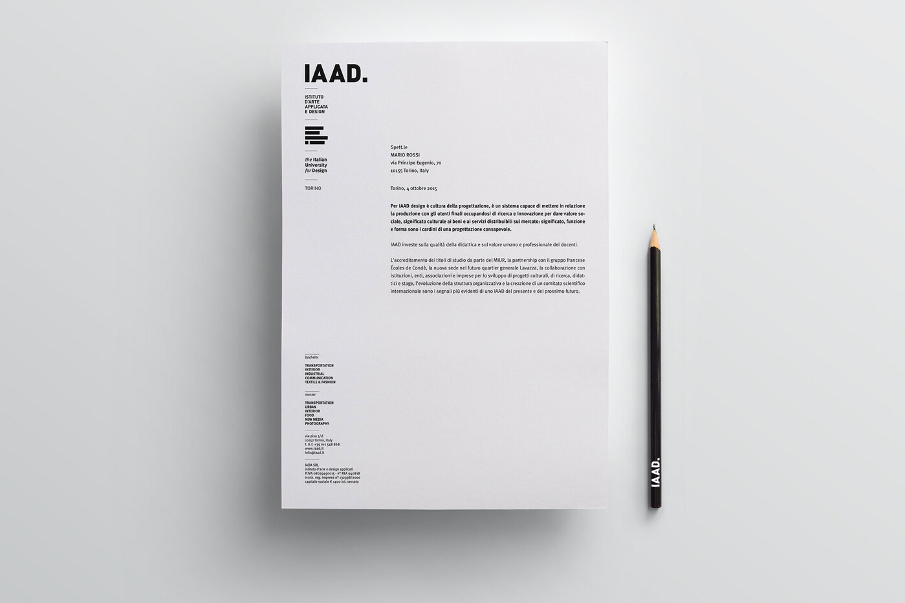

DIN was first commissioned in 1931 by the Deutsches Institut für Normung (German Institute for Standardization) in Germany to create a unified lettering system for public administration, transportation, and engineering during a period of industrial standardization. Its geometric, sans serif forms, minimal strokes, and clear structure reflected functionalist design ideals and ensured quick legibility; by 1936 it was widely used on German signage. The typeface was later updated by URW Type Foundry in Hamburg, and expanded in 1995 by Dutch designer Albert-Jan Pool with FF DIN for contemporary use. A 2017 rendition by Volker Schnebel further developed the family, now used by brands such as Forever 21 and DirecTV.
Interstate
Interstate was designed by Tobias Frere-Jones in the United States between 1993 and 1999, drawing inspiration from Highway Gothic, the signage alphabets created in 1949 for the Federal Highway Administration during the expansion of the Eisenhower-era interstate highway system. Rooted in mid-century American infrastructure and modernist clarity, Interstate reinterpreted these utilitarian forms for the corporate design landscape of the 1990s. Its sans serif structure features geometric shapes, wide spacing, large open counters, and sharply slanted terminals, offering versatility across many weights and styles. The typeface became popular for branding and display, used by companies such as Citigroup, Southwest Airlines, SoundCloud, and Lamborghini.
Comparison
Similarities
Interstate and DIN may look like similar typefaces at a distance, but up close they are very different typefaces. Still, the serif typefaces do share some similarities. Both of them have lots of fonts that vary in weight and style. Above, both of them are in a regular style. For more straightforward characters with sharp angles, they have almost the same shape with some variation.Above is the Uppercase K, very simple and sharp-angled character. There is a slight variation in the thickness of the K. This was one of the most similar character between the two typefaces, the rest have too big of a difference to compare with transparency.Above is the Uppercase L, which is also a very simple and sharp-angled character. There is a slight variation in the thickness for the base for the L. Again, this was one of the most similar character between the two typefaces, the rest have too big of a difference to compare with transparency.
Differences
The counter on the uppercase Q is a lot longer and not as round as the Interstate Q. The angle of the tail is also more obtuse on DIN’s uppercase Q compared to Interstate’s.The uppercase M from DIN doesn’t come to a sharp point, and the aperture on the Interstate uppercase M is a bit deeper than DIN.The bowl on the uppercase J from Interstate is wider and a bit deeper than on DIN. The angle on the terminals DIN is again more obtuse compared to the Interstate J.The DIN terminal of the a has a bigger angle than the terminal in the Interstate a. The counter of the DIN a is pinched to the top right and more asymmetrical than the counter of the Interstate a which is more symmetrical.The DIN terminal of f is much more straight and short than the Interstate terminal of f is more curved and thick. The DIN crossbar in f is thinner and higher than the Interstate crossbar in f which is thicker.The DIN descender of g has a smaller angle than the Interstate descender of g. The DIN loop of g is longer than the Interstate loop of g which is much shorter. The DIN counter of g is more symmetrical and longer than the Interstate counter of g which is much more round and shorter.The DIN dot of i is a rectangle while the Interstate dot of i is a larger circle.The DIN terminal of the l is curved to the right while the Interstate terminal of the Interstate l is straight and thicker. The DIN ascender of the l has no angle while the Interstate ascender l is angled.The DIN descender of the p is not angled while the Interstate descender in the Interstate q is angled at 27 degrees. The bowl of the DIN q is more symmetrical and longer than the bowl of the Interstate q which is more rounded.The DIN terminal of s is a smaller angle than the Interstate terminal of s. The DIN spine of s is much thinner and more rounded than the Interstate spine of s which is more diagonal and thicker.The DIN tail of y is more curved and skinnier than the Interstate tail of y which is more straight and thicker.The ones in both DIN and Interstate only have a terminal and no foot. As usual, the main difference is between the stem thickness and the height. DIN is both taller and has less thickness compared to Interstate.In the number 3’s, the narrowness about DIN is a lot more noticeable. The number 3 in Interstate also really shows how deep the bowls are for certain characters. The angle on the DIN terminal is closer to being parallel with the baseline than Interstate.Both DIN and Interstate have a a similar shaped four. The counter on Interstate Four is bigger, and the four from DIN doesn’t have a closed counter. Another good example of how much thinner DIN is compared to Interstate.Very notable difference in widths between the eighths for DIN and Interstate. The counters almost look flipped, DIN’s counters for the 8 are long and thin, while Interstate’s are wide and rounder.Similar to the eight, the difference between the width of the 9’s is representative of many characters in the font; DIN is a lot thinner, and Interstate is a lot rounder. Interstate 9 has a perpendicular terminal that curves from the counter, while DIN’s is parallel with the baseline.The DIN asterisk has five points while the Interstate asterisk has six points.The DIN question mark has a more narrow bowl while the Interstate question mark has a more rounded bowl that is wider. The DIN dot is a rectangle while the Interstate dot is a circle.The DIN quotation marks have a more vertical angle than the Interstate quotation marks. The DIN quotation marks have a more even width while the Interstate quotation marks are wider at the bottom and more narrow at the top.The DIN exclamation mark has a rectangular dot while the Interstate exclamation mark has a circular dot. Both exclamation marks diverge from top to bottom, but the Interstate exclamation mark has a stroke that converges more explicitly to the bottom of the stroke.The DIN ampersand bowl is much larger than the Interstate ampersand bowl which is much smaller. The DIN ampersand has a continuous stroke throughout the character while the Interstate ampersand is a combination of two thick strokes.The DIN parentheses is less curved, skinnier, and taller than the Interstate parenthesis is thicker, shorter, and more curved.The DIN comma has a slightly smaller angle than the Interstate comma. The DIN comma has a more even width while the Interstate width is wider at the top and more narrow at the bottom of the comma.
Examples and visual references
DIN

A German street sign using the DIN typeface.

A magazine design from the Italian University for Design using the DIN typeface for its body text and navigation column.An example of DIN typeface being used in the logo for DIRCTV.
Interstate
1995 Bomb Magazine’s typeface is Interstate at the top of the publication.Business card for Flower Architecture displaying its use of a modified Interstate for its logo and typefaces on the card.A TV Series poster of the show, Citadel, and its use of Interstate for the actor’s names.


.svg)